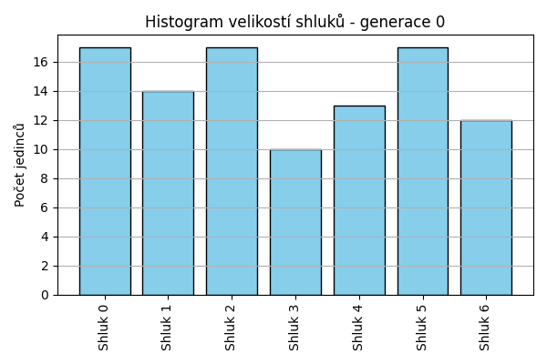
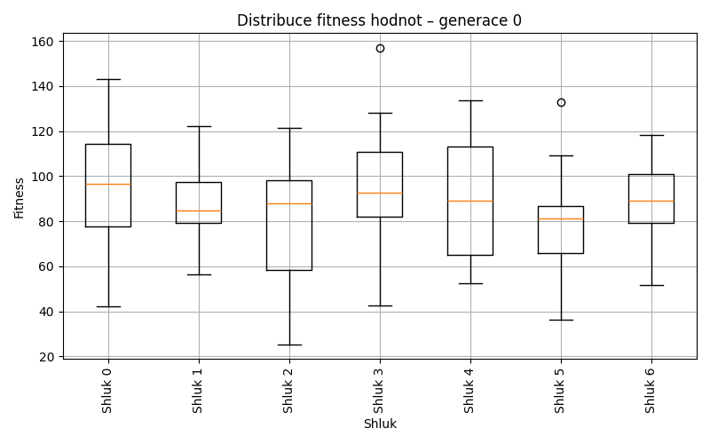
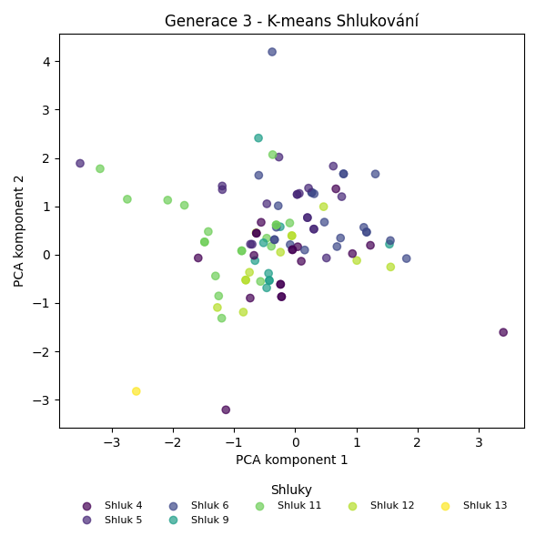
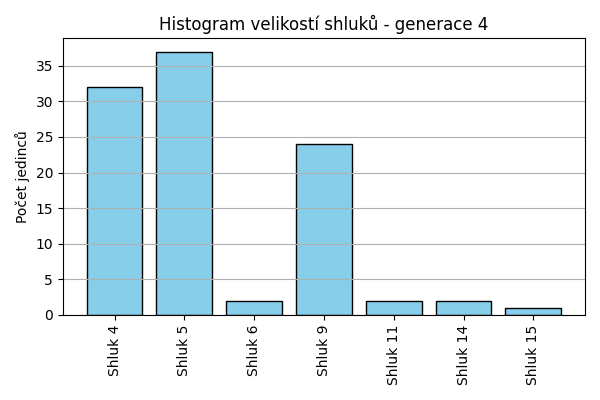
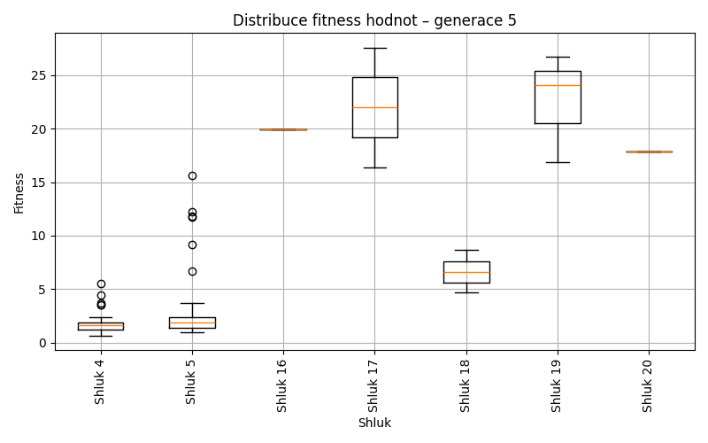
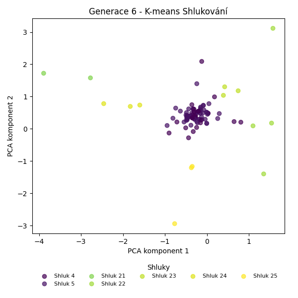
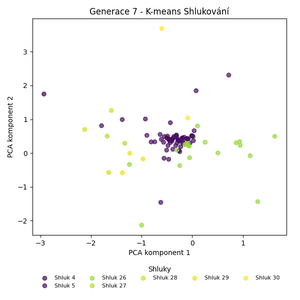
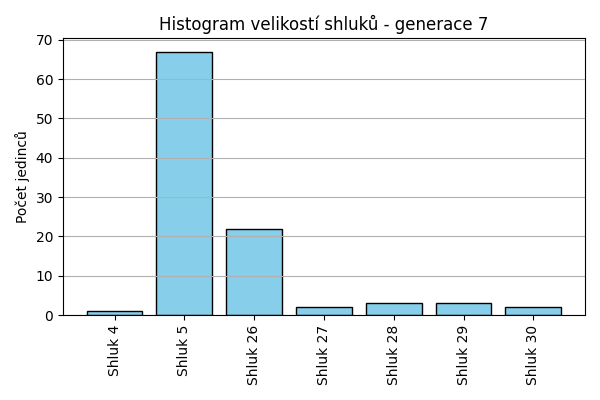
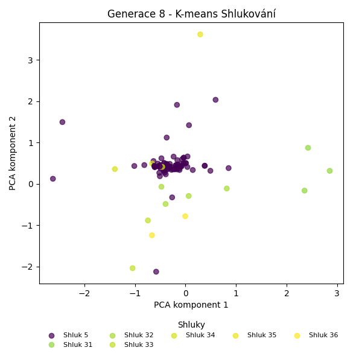
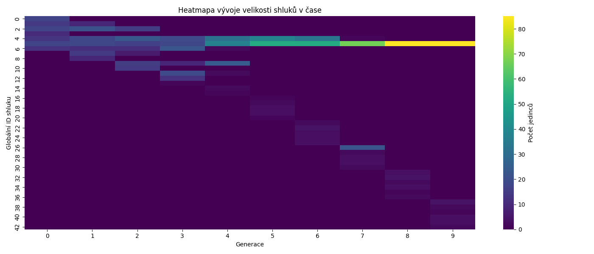

Kmeans shlukování – Vývoj
Generace 0



Generace 1

Posun centroidů mezi generací 0 → 1:
- Shluk 0: 6.8376
- Shluk 1: 8.7595
- Shluk 2: 6.6642
- Shluk 3: 6.4630
- Shluk 4: 7.7081
- Shluk 5: 6.4337
- Shluk 6: 8.4724

Generace 2

Posun centroidů mezi generací 1 → 2:
- Shluk 0: 7.3164
- Shluk 1: 4.4555
- Shluk 2: 5.0740
- Shluk 3: 5.3381
- Shluk 4: 6.6897
- Shluk 5: 3.4824
- Shluk 6: 3.4672

Generace 3


Posun centroidů mezi generací 2 → 3:
- Shluk 0: 3.9993
- Shluk 1: 3.5590
- Shluk 2: 4.3889
- Shluk 3: 4.5149
- Shluk 4: 4.9454
- Shluk 5: 2.9646
- Shluk 6: 8.3249

Generace 4


Posun centroidů mezi generací 3 → 4:
- Shluk 0: 1.1004
- Shluk 1: 0.9592
- Shluk 2: 6.2955
- Shluk 3: 1.5552
- Shluk 4: 4.1937
- Shluk 5: 5.8685
- Shluk 6: 11.5279
Generace 5
Posun centroidů mezi generací 4 → 5:
- Shluk 0: 0.8480
- Shluk 1: 0.5020
- Shluk 2: 6.4446
- Shluk 3: 4.8542
- Shluk 4: 4.3598
- Shluk 5: 6.8767
- Shluk 6: 7.4337

Generace 6


Posun centroidů mezi generací 5 → 6:
- Shluk 0: 0.5063
- Shluk 1: 0.4966
- Shluk 2: 6.2658
- Shluk 3: 2.8485
- Shluk 4: 3.1558
- Shluk 5: 5.6199
- Shluk 6: 5.1572
Generace 7


Posun centroidů mezi generací 6 → 7:
- Shluk 0: 5.2444
- Shluk 1: 0.2384
- Shluk 2: 4.9407
- Shluk 3: 4.7026
- Shluk 4: 4.5438
- Shluk 5: 5.7614
- Shluk 6: 8.0625

Generace 8


Posun centroidů mezi generací 7 → 8:
- Shluk 0: 5.1391
- Shluk 1: 4.7191
- Shluk 2: 2.3569
- Shluk 3: 5.1194
- Shluk 4: 5.6201
- Shluk 5: 7.1013
- Shluk 6: 5.9002

Generace 9


Posun centroidů mezi generací 8 → 9:
- Shluk 0: 0.1194
- Shluk 1: 5.5453
- Shluk 2: 4.9107
- Shluk 3: 5.9645
- Shluk 4: 6.1475
- Shluk 5: 6.7276
- Shluk 6: 5.2792


